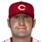

American Baseball League · Depth chart & lineups
Cincinnati Reds
← Team page · Payroll · Transactions
Based on games played and started through May 13, 2002. The OOTP export has no saved depth chart or lineup card, so this is derived from real usage. Lineups and depth chart list only players on the active roster now (26 players).
Most common lineups
For each batting-order spot, the active player who started there most often against that kind of starter (each player used once). Starts in spot = games he started in that spot out of the games against that hand. AVG/OBP/SLG: his season line with this club.
vs. right-handed starters 29 games
| # | Player | Pos | Starts in spot | AVG | OBP | SLG |
|---|---|---|---|---|---|---|
| 1 | D'Angelo Jimenez | 2B | 25 of 29 | .314 | .386 | .468 |
| 2 | 3B | 26 of 29 | .308 | .356 | .585 | |
| 3 | RF | 26 of 29 | .329 | .401 | .611 | |
| 4 | 1B | 25 of 29 | .274 | .359 | .562 | |
| 5 | C | 23 of 29 | .280 | .401 | .449 | |
| 6 | DH | 18 of 29 | .271 | .314 | .419 | |
| 7 | CF | 21 of 29 | .280 | .335 | .420 | |
| 8 | Jeff Branson | SS | 22 of 29 | .256 | .329 | .304 |
| 9 | Doug Glanville | LF | 15 of 29 | .273 | .319 | .394 |
vs. left-handed starters 11 games
| # | Player | Pos | Starts in spot | AVG | OBP | SLG |
|---|---|---|---|---|---|---|
| 1 | D'Angelo Jimenez | 2B | 11 of 11 | .314 | .386 | .468 |
| 2 | 3B | 9 of 11 | .308 | .356 | .585 | |
| 3 | RF | 10 of 11 | .329 | .401 | .611 | |
| 4 | 1B | 9 of 11 | .274 | .359 | .562 | |
| 5 | C | 7 of 11 | .280 | .401 | .449 | |
| 6 | DH | 6 of 11 | .271 | .314 | .419 | |
| 7 | CF | 6 of 11 | .280 | .335 | .420 | |
| 8 | Jeff Branson | SS | 7 of 11 | .256 | .329 | .304 |
| 9 | Doug Glanville | LF | 5 of 11 | .273 | .319 | .394 |
Depth chart games started by position through May 13
| Pos | Role | Player | GS at pos | G | AVG | OBP | SLG | HR |
|---|---|---|---|---|---|---|---|---|
| C | Starter | 32 | 33 | .280 | .401 | .449 | 6 | |
| Backup 1 |  Dusty Wathan | 8 | 12 | .378 | .410 | .541 | 1 | |
| 1B | Starter | 38 | 39 | .274 | .359 | .562 | 11 | |
| Backup 1 | Chris Richard | 2 | 27 | .287 | .380 | .525 | 5 | |
| Backup 2 | Dusty Wathan | 0 | 12 | .378 | .410 | .541 | 1 | |
| Backup 3 | 0 | 5 | .500 | .600 | 1.250 | 1 | ||
| 2B | Starter | D'Angelo Jimenez | 30 | 39 | .314 | .386 | .468 | 5 |
| Backup 1 | 10 | 14 | .300 | .323 | .367 | 0 | ||
| 3B | Starter | 37 | 37 | .308 | .356 | .585 | 12 | |
| Backup 1 | D'Angelo Jimenez | 3 | 39 | .314 | .386 | .468 | 5 | |
| Backup 2 | 0 | 5 | .500 | .600 | 1.250 | 1 | ||
| SS | Starter | Jeff Branson | 36 | 37 | .256 | .329 | .304 | 0 |
| Backup 1 | D'Angelo Jimenez | 3 | 39 | .314 | .386 | .468 | 5 | |
| LF | Starter | Doug Glanville | 29 | 37 | .273 | .319 | .394 | 2 |
| Backup 1 | Chris Richard | 11 | 27 | .287 | .380 | .525 | 5 | |
| Backup 2 | 0 | 37 | .280 | .335 | .420 | 3 | ||
| CF | Starter | 37 | 37 | .280 | .335 | .420 | 3 | |
| Backup 1 | Doug Glanville | 3 | 37 | .273 | .319 | .394 | 2 | |
| Backup 2 | 0 | 3 | .000 | .000 | .000 | 0 | ||
| RF | Starter | 36 | 38 | .329 | .401 | .611 | 9 | |
| Backup 1 | Doug Glanville | 4 | 37 | .273 | .319 | .394 | 2 | |
| Backup 2 | 0 | 37 | .280 | .335 | .420 | 3 | ||
| Backup 3 | 0 | 3 | .000 | .000 | .000 | 0 | ||
| DH | Starter | 31 | 32 | .271 | .314 | .419 | 2 | |
| Backup 1 | Chris Richard | 8 | 27 | .287 | .380 | .525 | 5 |
Rotation OOTP projected starters (projected_starting_pitchers.csv)
| # | Pitcher | Active | GS | W-L | IP | ERA | WHIP | K |
|---|---|---|---|---|---|---|---|---|
| 1 | Yes | 8 | 4-2 | 46.1 | 4.66 | 1.47 | 38 | |
| 2 | Yes | 8 | 0-3 | 46.0 | 5.87 | 1.57 | 28 | |
| 3 | Yes | 8 | 1-3 | 45.2 | 5.72 | 1.69 | 22 | |
| 4 | Jamey Wright | Yes | 7 | 1-4 | 35.0 | 6.17 | 1.91 | 17 |
| 5 | Vicente Padilla | Yes | 9 | 3-3 | 53.2 | 4.86 | 1.75 | 35 |
Bullpen roles from usage: closer = most saves, setup = most holds, long relief = most innings per outing (1.1+ IP)
| Role | Pitcher | Throws | G | SV | HLD | IP | IP/G | ERA | K |
|---|---|---|---|---|---|---|---|---|---|
| Closer | RHP | 13 | 8 | 0 | 16.0 | 1.2 | 2.25 | 20 | |
| Setup | Tom Jacquez | LHP | 15 | 0 | 4 | 25.1 | 1.7 | 7.11 | 11 |
| Setup | RHP | 13 | 1 | 5 | 9.0 | 0.7 | 1.00 | 9 | |
| Long relief | LHP | 10 | 0 | 1 | 18.2 | 1.9 | 8.20 | 17 | |
| Long relief | Brian Cooper | RHP | 8 | 0 | 0 | 19.1 | 2.4 | 4.66 | 10 |
| Middle relief | RHP | 11 | 0 | 0 | 15.2 | 1.4 | 6.89 | 8 | |
| Middle relief | RHP | 1 | 0 | 0 | 1.0 | 1.0 | 0.00 | 0 |
Bench active position players outside the regular lineups
| Player | Pos | G | PA | AVG | OBP | SLG |
|---|---|---|---|---|---|---|
| Chris Richard | LF | 27 | 92 | .287 | .380 | .525 |
| Dusty Wathan | C | 12 | 39 | .378 | .410 | .541 |
| 2B | 14 | 33 | .300 | .323 | .367 | |
| 1B | 5 | 6 | .500 | .600 | 1.250 | |
| 1B | 3 | 4 | .000 | .000 | .000 |
Injured list
Nobody on the injured list.